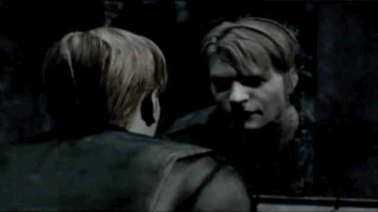

Bloodborne

Imagina acordar numa cidade gótica completamente insana, onde tudo é estranho, as pessoas falam coisas que não fazem sentido,
e tem criaturas nojentas espreitando em cada canto. Esse é Bloodborne.
Você é um caçador (mas ninguém te explica exatamente o que isso significa), e sua missão parece ser... sobreviver.
Só que quanto mais você explora, mais percebe que tem algo muito errado acontecendo em Yharnam.
Tem uma praga, cultos bizarros, rituais, deuses antigos e muito sangue. MUITO sangue.
O combate é rápido, agressivo, e te obriga a ser corajoso — nada de se esconder atrás de escudo.
É difícil, mas cada vitória é incrivelmente satisfatória. A ambientação é absurda,
parece que você tá dentro de uma pintura de terror.
Bloodborne é o tipo de jogo que não pega na sua mão, mas te puxa pra dentro de um pesadelo do qual você não vai querer acordar.
Se você curte mistério, terror psicológico e um desafio de verdade, esse jogo vai grudar em você.
Silent hill 2

Um homem confuso é chamado por uma misteriosa carta para as cidades de Silent hill,"Em meus sonhos inquietos eu vejo aquela cidade,Silent hill,um dia você me prometeu me levar de volta a
ela mas você nunca o fez." apos esse momento da se margem para uma das obras mais profundas,enigmeticas e depressivas do mundo do horro ficticio
você está na pele de James Sunderland,um homem que está a procura de sua esposa na cidade voltada por névoa,James diz que sua esposa está morta ha exatos 3
anos,"Uma pessoa morta não pode escrever uma carta.."esse jogo ira te deixar confuso até o fim dele,você ira encontrar personagens secundarios que
também passam por confusões mentais e traumas,eles estao na cida mas é como se não soubessem o por que vieram,você ficara
curioso com as respostas que esse jogo poderá lhe dar sobre a sua narrativa mas quando realmente chegar a hora das respostas
um mal estar sobrevora a sua mente e voce irá perceber que Silent hill 2 é diferente de tudo que ja foi lançado mesmo depois de 24 anos
do seu lançamento,esse jogo te assusta não com sustos mas com o medo de te dar um,esse jogo te deprecia,é um jogo
psiclogicamente depressivo e denso mas é com certeza um dos jogos mais unicos que você podera ver ao decorrer de toda
sua vida,não existe nada igual a Silent hill 2.
Elden rinG

Elden Ring é como se jogassem você num mundo de fantasia gigantesco e dissessem: "vai lá, descobre tudo sozinho".
E isso é incrível.
Você acorda como um "maculado" (nome bonito pra um guerreiro falido), e o mundo tá completamente caótico.
Tem castelos abandonados, vilarejos amaldiçoados, monstros do tamanho de prédios e muita coisa escondida esperando por você.
Não tem setinha no mapa nem conversa explicadinha — você vai explorando, testando, morrendo, aprendendo...
e aí de repente, BUM, tá enfrentando um dragão de relâmpago no meio de um lago.
O jogo te dá liberdade total pra montar seu personagem do seu jeito: mago, espadachim, tanque, assassino — ou tudo isso misturado.
E o melhor? Tudo que você vê no horizonte, você pode ir lá e explorar.
Criado pelo mesmo diretor de Dark Souls com ajuda do George R. R. Martin (sim, o cara de Game of Thrones),
esse jogo é um mergulho num mundo riquíssimo, cheio de mistério, emoção e batalhas épicas.
Você vai se perder — e amar isso.
Devil May Cry 5

Devil May Cry 5 é aquele tipo de jogo que te faz sorrir enquanto você espanca um demônio gigante com uma moto que vira espada.
Sim, é exatamente tão insano quanto parece.
A cidade tá sendo tomada pelo inferno — literalmente — e três caçadores estão ali pra resolver: o clássico Dante, sempre zoando tudo;
o jovem Nero, que tá com um braço mecânico cheio de truques; e o enigmático V, que invoca criaturas pra lutar por ele.
Cada um tem seu estilo, e todos são absurdamente estilosos.
O combate é o coração do jogo: rápido, frenético, e com combos que fazem você se sentir um ninja do rock.
Você pode lançar inimigos no ar, atirar neles, puxar com o gancho, soltar raios, invocar panteras — tudo com uma trilha sonora bombando
no fundo e uma pontuação de estilo subindo na tela.
A história é um baita espetáculo, cheia de reviravoltas e momentos cinematográficos de tirar o fôlego.
É o tipo de jogo que você joga sorrindo e pensa: “eu sou incrível”.
Se você gosta de ação, música, exagero e personagens carismáticos, DMC 5 é obrigatório.
DOOM 1993
DOOM é aquele jogo raiz, brutal, direto ao ponto — o verdadeiro pai dos jogos de tiro em primeira pessoa.
Lançado em 1993, ele chegou destruindo tudo, colocando o jogador no controle de um fuzileiro espacial preso numa estação de Marte,
onde um experimento deu terrivelmente errado e abriu as portas do inferno. Literalmente.
Você não tem tempo pra enrolar, não tem tutorial, não tem cutscene longa. É só você, sua escopeta e dezenas de demônios querendo te transformar em picadinho.
A missão? Sobreviver, pegar armas cada vez mais insanas e limpar cada fase com velocidade, precisão e muito sangue.
Os mapas são labirínticos e cheios de surpresas — passagens secretas, botões escondidos, armadilhas e batalhas intensas que te deixam com o coração acelerado.
E a trilha sonora? Um rock pesado que te impulsiona a correr, atirar e não parar por nada.
Mesmo com gráficos pixelados, o jogo é tão estiloso e bem-feito que continua sendo divertido até hoje.
DOOM não te segura pela mão. Ele te joga no meio do caos e espera que você se vire. E é isso que o torna tão viciante:
a sensação de dominar um ambiente caótico, destruir inimigos com estilo e sair vivo do outro lado.
Se você nunca jogou, essa é a sua chance de sentir na pele a origem do gênero. E se já jogou, prepare-se para sentir aquela nostalgia gostosa —
e perceber que DOOM continua tão frenético, desafiador e divertido quanto sempre foi.
The Evil Within
Um dos melhores jogos já criados e infelizmente subestimados e esquecidos pelas pessoas. Uma mistura entre Matrix, Silent Hill e Resident Evil.
Com uma narrativa confusa, mas totalmente única, pessoal e profunda, The Evil Within é um dos melhores — senão o melhor — jogos narrativos de terror já produzidos.
Dirigido pelo criador original de Resident Evil, este jogo é um drama policial em que um detetive depressivo, Sebastian Castellanos, perdeu tudo há 2 anos em um
incêndio misterioso. Chamado para investigar um massacre em um hospital psiquiátrico, começa a sua jornada num dos jogos mais criativos e sombrios de ficção científica e terror.
O jogo é sangrento, claustrofóbico, com momentos agonizantes e uma história extremamente emocional e perturbadora. Uma verdadeira obra-prima pouco falada, mas inesquecível.
Alan Wake 2

"Os monstros existem, e eles possuem muitas faces." Alan Wake 2 tem uma narrativa que mistura cinema e videogame. É, no mínimo, um dos três melhores jogos de terror já criados. Com uma direção de arte jamais vista, o jogo combina terror psicológico com drama pessoal. Alan, um escritor de livros de horror, está preso há mais de 13 anos dentro da própria criação — dentro dos seus livros. Ele está à beira da loucura tentando escapar do chamado "Lugar Obscuro". O jogo tem dois protagonistas: o perturbado escritor Alan Wake e a detetive criminal Saga Anderson, que entra na história ao investigar assassinatos que supostamente já estavam escritos nos livros de Alan. Sem perceber, Saga é envolvida em uma trama sinistra e única. Ao longo da investigação, ela descobre que está diretamente conectada a Alan e percebe que, se quiser salvar sua vida e sua família, precisará ajudá-lo a sair do Lugar Obscuro e enfrentar os próprios monstros que ele criou.
Black Myth: Wukong

Black Myth: Wukong é aquele tipo de jogo que te faz pensar “meu Deus, isso é real mesmo?” enquanto você enfrenta monstros mitológicos gigantes com um bastão mágico que se multiplica.
Sim, é tão épico quanto parece.
Você é o Destined One, uma espécie de Macaco Lendário com poderes sobrenaturais, transformações animalescas e reflexos que fariam qualquer mestre shaolin chorar de orgulho.
O mundo? Um espetáculo visual baseado na mitologia chinesa, cheio de deuses irritados, demônios bizarros e criaturas que parecem saídas de um pesadelo lindo.
O combate é uma dança violenta entre feitiços, porradas e movimentos ágeis — você pode virar inseto pra escapar de ataques, invocar magia, girar o bastão como um deus e ainda sair andando como se nada tivesse acontecido.
Cada batalha parece uma cena de filme, com câmera dramática, chefes imensos e aquele sentimento constante de: “ok, isso é muito foda”.
A história é cheia de mistério, lendas antigas e um clima espiritual que mistura filosofia e pancadaria como ninguém.
Se você curte mitologia oriental, ação pesada e gráficos que fazem seu console suar, Wukong vai ser seu novo vício.
The Last of Us

The Last of Us é uma história sobre perda, esperança e a força que nasce nas piores circunstâncias.
Em um mundo devastado, Joel e Ellie encontram mais do que apenas sobrevivência — encontram uma família improvável.
Cada passo é carregado de medo e afeto, de lembranças do que foi e do que ainda pode ser.
É um jogo que fala sobre o peso das escolhas, o amor que sobrevive mesmo quando tudo parece perdido, e a humanidade que insiste em resistir.
Mais que ação, é um retrato intenso de emoções, onde cada momento é uma luta para proteger aquilo que resta de bom no mundo.
The Last of Us não é só uma aventura, é uma viagem no coração de quem enfrenta o impossível.
Teen Wolf

Teen Wolf é a jornada de Scott McCall, um adolescente que se torna lobisomem e precisa aprender a controlar seu novo poder enquanto enfrenta perigos sombrios.
Entre caçadas, aliados inesperados e ameaças que espreitam na sombra, ele descobre que a sobrevivência exige coragem e sacrifícios.
É uma mistura de mistério, ação e transformação, onde cada decisão pode mudar tudo.
Teen Wolf mostra o lado selvagem que existe dentro de todos nós, lutando para não ser dominado.